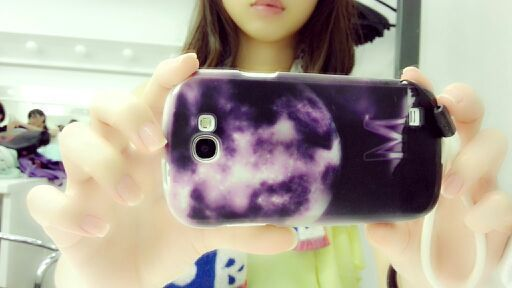

はい〜♪
皆さんこんばんわあ (^ω^)
ろってぃ-だよ！
キリタンポめっちゃめっちゃ
おいちいねぇーー らぶらぶ。
秋田すき。
今日は 秋田県でliveでした ！！
セットリストは
1、ガールズルール
2、扇風機
3、ぐるぐるカーテン
4、狼に口笛を
5、涙がまだ悲しみだった頃
6、おいでシャンプー
でした〜(*´∇｀*)(*´∇｀*)
会場がいっぱいになる位の人が
来てくれました ！
本当に嬉しゅうです(^ω^)
ありがとうございます！
今日の本番始まる前だよん。
まひろねっ
秋田県に来るのが人生初めてで
めちゃめちゃ楽しみにしてて
４時間かかった新幹線の中も
わくわくして 全然疲れなかったっ☆
秋田県の町がどんななのか興味あったし、
大阪でも東京でも見れない
綺麗な星空にも興味あって、、、
それに、秋田の美味しいご飯も
食べたかったし、
キリタンポも食べたことなくて
楽しみ過ぎてっっ (〃∨〃)
秋田べんも好きやしねっ♪
今日は、かなりんと同じヘアスタイル
ひめたんがよくやってる
チョンマゲ巻きをしました )))
まひろのケースは
Rotty夢(月マーク)の
月に まひろの「M」やねん♪

ぢゃあ〜ねっ☆
明日も 楽しみ、頑張ります。
大好きだー
おやすみなさい...(*´ω｀*)